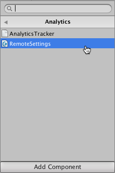
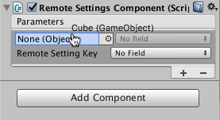
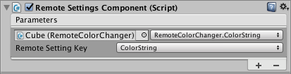
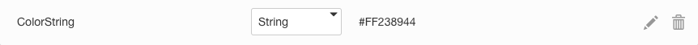

Use the Remote Settings componentA functional part of a GameObject. A GameObject can contain any number of components. Unity has many built-in components, and you can create your own by writing scripts that inherit from MonoBehaviour. More info See in Glossary to control the properties of other components in your SceneA Scene contains the environments and menus of your game. Think of each unique Scene file as a unique level. In each Scene, you place your environments, obstacles, and decorations, essentially designing and building your game in pieces. More info See in Glossary without writing any code. The Remote Settings component is part of the Remote Settings plug-in, which you can download from the Unity Asset Store.
You can place the Remote Settings component on the same GameObjectThe fundamental object in Unity scenes, which can represent characters, props, scenery, cameras, waypoints, and more. A GameObject’s functionality is defined by the Components attached to it. More info See in Glossary as another component you want to control, or place it on a different GameObject. The only requirement is that both the Remote Settings component and any controlled components are active in the same Scene.
Using the Remote Settings component
To connect a remote setting to a component property or field:
Go to Window > Unity AnalyticsSee Analytics More info See in Glossary > Remote SettingsRemote settings are game variables that you can set remotely on your Analytics Dashboard. See Remote Settings. More info See in Glossary to open the Remote Settings window.
Choose the configuration (Release or Development) that contains the setting you are going to connect.
Go to the InspectorA Unity window that displays information about the currently selected GameObject, Asset or Project Settings, alowing you to inspect and edit the values. More info See in Glossary window for the GameObject that you want to hold the Remote Settings component.
Click the Add Component button.
Find the AnalyticsA data platform that provides analytics for your Unity game. More info See in Glossary > RemoteSettings script in the list.

Click Add Component to add the Remote Settings component to the GameObject.
To add a new parameter mapping, click the + icon at the bottom of the Remote Setting component’s Parameters list.
Drag the GameObject or the component that you want to remotely control to the parameter’s ObjectSee GameObject. See in Glossary field.

Select the property or field you want to control in the parameter’s FieldA generic term that describes an editable box that the user clicks to enter a value. Editable fields in the inspector are also commonly referred to as fields. More info See in Glossary drop-down list.
Choose the Remote Setting Key that you want to use to control this component property or field.

Click the + icon to add additional parameters.
If no Remote Settings Key names appear in the list, open the Remote Settings window (menu: Window > Unity Analytics > Remote Settings) and click Refresh. If your remote settings still do not display in this window, check that you have an Internet connection and that your project is properly set up (see Enabling Remote Settings).
If the wrong keys appear in the list of key names, open the Remote Settings window (menu: Window > Unity Analytics > Remote Settings) and set the Active Configuration to the configuration containing the correct set of keys.
The Remote Settings component cannot set the variables of prefabsAn asset type that allows you to store a GameObject complete with components and properties. The prefab acts as a template from which you can create new object instances in the scene. More info See in Glossary that Unity loads later in the Scene than the component itself. Similarly, a Remote Settings component that is loaded later in the Scene can only set variables of objects that are part of the same prefab. Use more than one Remote Settings component to handle these types of situations.
Setting non-primitive properties
You can use the Remote Settings component to set the primitive fields and properties of an object directly. However, to set the variables of an object’s non-primitive members, you do have to write some additional code. The easiest approach is to add primitive-type properties to an object that you can set using the Remote Settings component. Then, implement the setter functions of these properties to update the intended variables of the non-primitive objects.
Code example
In the example below, the class sets the base color of the Material assigned to a rendered GameObject. To do this, the class defines a primitive string-type property that takes an HTML-style color string. The setter for this property parses the string and sets the Material color accordingly.
using UnityEngine;
public class RemoteColorChanger : MonoBehaviour
{
private string _colorString = "";
public string ColorString {
get {
return _colorString;
}
set {
Color colorObject;
if (ColorUtility.TryParseHtmlString (value, out colorObject)) {
_colorString = value;
Renderer renderer = GetComponent<Renderer> ();
if (renderer != null) {
MaterialPropertyBlock materialProperties = new MaterialPropertyBlock ();
renderer.GetPropertyBlock (materialProperties);
materialProperties.SetColor ("_Color", colorObject);
renderer.SetPropertyBlock (materialProperties);
}
} else {
Debug.LogWarning ("Invalid color string: " + value);
}
}
}
}
Using the code example
You can add this RemoteColorChanger script to any GameObject that has a Renderer component. You can then use the Remote Settings component to map a setting key to the ColorString property. In this example, the script is a component of a Cube object.
A Remote Settings component mapping the ColorString Remote Setting key
The matching key-value pair on the Remote Settings page of your Analytics Dashboard looks like the following:

The ColorString setting defined on the Analytics Dashboard
Use the same technique to set any non-primitive value.
Is something described here not working as you expect it to? It might be a Known Issue. Please check with the Issue Tracker at issuetracker.unity3d.com.
Thanks for letting us know! This page has been marked for review based on your feedback.
If you have time, you can provide more information to help us fix the problem faster.
You've told us this page needs code samples. If you'd like to help us further, you could provide a code sample, or tell us about what kind of code sample you'd like to see:
You've told us there are code samples on this page which don't work. If you know how to fix it, or have something better we could use instead, please let us know:
You've told us there is information missing from this page. Please tell us more about what's missing:
You've told us there is incorrect information on this page. If you know what we should change to make it correct, please tell us:
You've told us this page has unclear or confusing information. Please tell us more about what you found unclear or confusing, or let us know how we could make it clearer:
You've told us there is a spelling or grammar error on this page. Please tell us what's wrong:
You've told us this page has a problem. Please tell us more about what's wrong:
Thanks for helping to make the Unity documentation better!